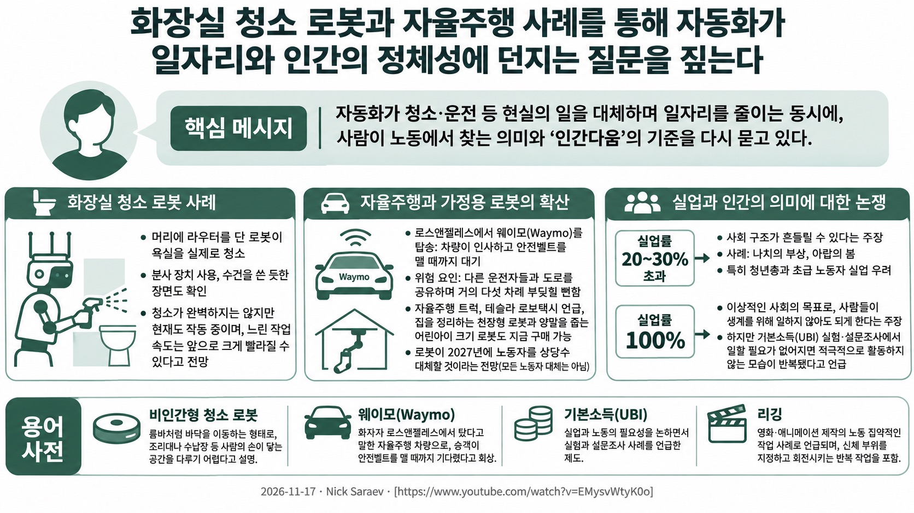

Nick SaraevYOUTUBE SUMMARIES · 2026-11-17 · Nick Saraev🎬 영상
화장실 청소 로봇과 자율주행 사례를 통해 자동화가 일자리와 인간의 정체성에 던지는 질문을 짚는다
청소 로봇과 자율주행 사례를 통해 자동화가 일자리와 인간의 의미에 던지는 질문을 다룬다.
영상 발화자의 견해·경험을 원문에 근거해 정리한 요약입니다.

라우터를 머리에 단 로봇이 화장실을 청소하는 영상
화자는 13분 15초 분량의 영상에서 머리에 라우터를 단 로봇이 욕실을 청소하는 모습을 소개한다. 로봇은 분사 장치를 사용하고, 손잡이를 직접 누르지 않고 수건을 쓴 듯한 장면도 나온다.
화자는 청소가 완벽하다고 하지는 않지만 실제로 청소를 하고 있다고 말한다. 현재의 느린 작업 속도가 앞으로 크게 빨라질 수 있다고 전망한다.
로봇 청소기와 사람의 생활 공간 사이의 차이
화자는 로봇 청소기 같은 비인간형 청소 기기는 이미 있었지만, 바닥을 움직이는 룸바 형태만으로는 조리대나 수납장을 청소하기 어렵다고 설명한다.
집의 싱크대와 수납장은 사람의 신체에 맞춰져 있어, 다른 형태의 로봇은 사람이 닿는 구석까지 다루지 못할 수 있다고 말한다. 영상 속 오래된 로봇도 머리에 라우터 안테나를 달고 로봇 팔을 사용하지만 사람과 같은 환경에서 움직이는 형태는 아니다.
웨이모와 가정용 로봇이 보여주는 일자리 대체
화자는 로스앤젤레스에서 웨이모를 탔다고 말하며, 차량이 승객에게 인사하고 안전벨트를 맬 때까지 기다렸다고 회상한다. 그는 위험했던 점으로 웨이모가 아닌 다른 운전자들과 도로를 공유하는 상황을 들고, 거의 다섯 차례 부딪힐 뻔했다고 말한다.
화자는 자율주행 트럭과 테슬라 로보택시를 언급하고, 천장에 매달려 집안을 정리하는 로봇과 양말을 줍는 어린아이 크기의 로봇도 지금 살 수 있다고 주장한다. 이런 기기들이 관련 서비스 수요를 이미 줄이고 있으며 더 이어질 것이라고 본다.
화자는 로봇이 2027년에 노동자를 상당수 대체할 것이라고 전망하지만, 모든 노동자가 대체된다는 뜻은 아니라고 선을 긋는다.
높은 실업률을 사회적 위기로 볼 것인가
화자는 실업률이 20~30%를 넘으면 사회 구조가 흔들릴 수 있다는 게시물의 주장을 소개하며, 나치의 부상과 아랍의 봄을 사례로 들었다. 특히 청년층과 초급 노동자의 실업을 우려하는 내용이었다고 전한다.
반대 의견으로는 이상적인 사회의 목표가 실업률을 100%로 높여 사람들이 생계를 위해 일하지 않아도 되게 하는 것이라는 주장을 소개한다. 다만 화자는 기본소득 실험과 설문조사에서 사람들이 일할 필요가 없어지면 적극적으로 활동하지 않는 모습이 반복적으로 나타났다고 말한다.
의무 노동에서 의미를 찾는 사람과 인간의 정체성
화자는 애니메이션이나 영화 제작의 리깅처럼 반복적이고 노동 집약적인 작업을 하던 사람들이 AI를 비판하는 모습을 언급한다. 처음에는 원해서 시작한 일이 아니더라도 오래 하면서 일부가 즐거움과 의미를 발견할 수 있다고 본다.
그는 청소 같은 일도 로봇이 맡게 되면 사람들이 그 노동을 인간다움의 기준으로 내세울지 묻는다. 자동화가 복제하는 것은 인간의 작업 결과물일 뿐, 의식 있는 인간이라는 점까지 빼앗지는 못한다는 생각을 덧붙인다.
화자는 예술에 무엇이 영혼을 부여하는지에 대한 질문도 꺼낸다. 자신은 특별히 영적인 사람이라고 생각하지 않지만, 이런 문제를 마주하면 많은 사람이 선택의 여지가 없다고 느끼는 듯하다고 말한다.
용어 사전
용어
뜻
비인간형 청소 로봇
룸바처럼 바닥을 이동하는 형태로, 조리대나 수납장 등 사람의 손이 닿는 공간을 다루기 어렵다고 영상에서 설명한다.
웨이모
화자가 로스앤젤레스에서 탔다고 말한 자율주행 차량으로, 승객이 안전벨트를 맬 때까지 기다렸다고 회상한다.
기본소득(UBI)
화자가 실업과 노동의 필요성을 논하면서 실험과 설문조사 사례를 언급한 제도다.
리깅
영상에서 영화·애니메이션 제작의 노동 집약적인 작업 사례로 언급되며, 신체 부위를 지정하고 회전시키는 반복 작업을 포함한다.